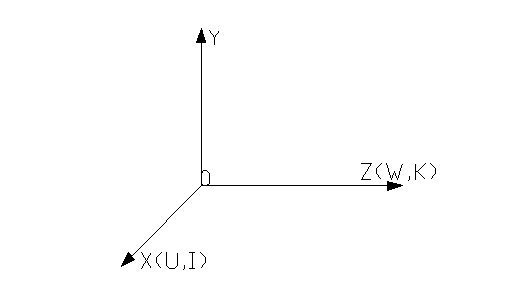

| 坐标系统 |
采用标准坐标系统，即右手笛卡尔坐标系统，如图4.1－2。
由图可见，刀具运动的正方向，是工件与刀具距离增大的方向。
在使用绝对尺寸编程时，X值（X坐标值）.Y值（Y坐标值）和Z值（Z坐标值）指定了刀具运动终点的坐标值。在使用增量尺寸编程时，U值（沿X轴的增量）和W值（沿Z轴的增量）指定了刀具运动的距离，其正方向分别与X、Z轴正方向相同,在同一程序段内可同时采用绝对尺寸和增量尺寸，但必须依照正确的组合格式。正确组合：X、Z；U、W；X、W；U、Z。不正确组合：X、U； W、Z。
一般情况下U=X终点－X起点W=Z终点－Z起点

起始点: 起始点（即刀具起始点）是程序启动时刀具的开始位置。
参考点: 参考点有硬参考点和软参考点，参考点的设定参阅。
坐标原点：坐标原点即工件坐标系原点。
机械原点：机械原点为机床上的刀尖固定基准点，一般设定为硬参考点。